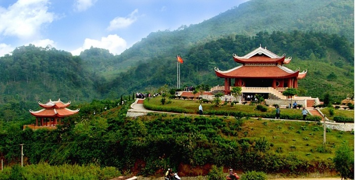
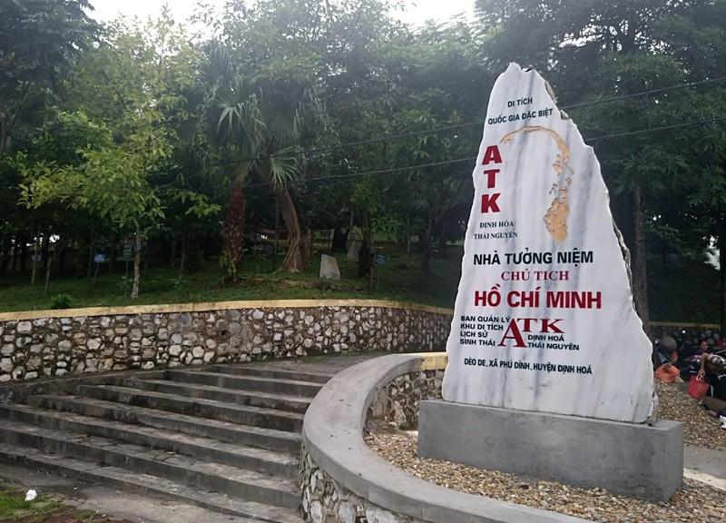

Khu di tích ATK Định Hóa thuộc địa phận các xã Phú Đình, Điềm Mặc, Thanh Định, Định Biên, Bảo Linh, Đồng Thịnh, Quy Kỳ, Kim Phượng, Bình Thành và thị trấn Chợ Chu - huyện Định Hóa - tỉnh Thái Nguyên, với tổng diện tích quy hoạch bảo tồn trên 5.200km2. Tại đây có 128 điểm di tích từ thời kháng chiến chống Pháp có ý nghĩa lịch sử lớn cho tới ngày nay.
Sau ngày toàn quốc kháng chiến (tháng 12/1946), với tầm nhìn chiến lược, Trung ương Đảng, Chính phủ và Chủ tịch Hồ Chí Minh đã quyết định chọn một vùng rộng lớn giáp ranh các tỉnh Thái Nguyên, Tuyên Quang, Bắc Cạn để làm an toàn khu (ATK) - hậu phương cho cuộc kháng chiến chống Pháp. Đánh giá về tiềm năng mảnh đất này, về mặt địa lý vừa rộng lớn vừa hiểm trở bảo đảm "tiến có thể đánh, lui có thể giữ" lại đáp ứng được các yếu tố "có nhân dân tốt, có cơ sở chính trị tốt”.
Ngày 20/5/1947 Hồ Chủ Tịch tới đồi Khau Tý, thuộc xóm Nạ Tra, xã Thanh Định (nay là xã Điềm Mặc, huyện Định Hóa) đặt Phủ chủ tịch đầu tiên và Định Hóa đã vinh dự được đảm nhận trách nhiệm là trung tâm đầu não của cả vùng chiến khu rộng lớn. Bác cũng đến sống và làm việc tại nhiều điểm ở ATK Định Hóa như Khuôn Tát, Tỉn Keo dưới chân Đèo De, Núi Hồng thuộc Bản Nà Lọm, Rục Rã (nay là Tỉn Keo, Phú Đình, Định Hóa).
Giai đoạn từ năm 1947 đến 1954, ATK Định Hóa không chỉ là nơi làm việc của Hồ Chí Minh và các cơ quan trung ương Đảng, các đồng chí Trường Chinh, Tôn Đức Thắng, Võ Nguyên Giáp, Phạm Văn Đồng... mà còn là nơi chứng kiến nhiều sự kiện lịch sử trọng đại của dân tộc: Phát động phong trào thi đua ái quốc năm 1949, ký sắc lệnh thành lập Hội đồng Quốc phòng tối cao, thành lập Đảng ủy và Bộ Chỉ huy chiến dịch Biên giới vào ngày 25/7/1950, ra mệnh lệnh mở các chiến dịch Trung Du, Hòa Bình, Tây Bắc, Thượng Lào…
Đặc biệt, ngày 6/12/1953, tại đồi Tỉn Keo, Chủ tịch Hồ Chí Minh đã chủ trì cuộc họp Bộ chính trị thông qua kế hoạch tác chiến cuộc Đông Xuân (1953 – 1954) quyết định mở chiến dịch Điện Biên Phủ. Nhờ có những quyết sách quan trọng, kịp thời đó, chúng ta mới có một chiến thắng Ðiện Biên Phủ chấn động địa cầu, chấm dứt 80 năm đô hộ của Thực dân Pháp, lập lại hòa bình tại Đông Dương…
Về phương diện ngoại giao, ATK cũng là nơi diễn ra các hoạt động ngoại giao của nước ta thời điểm bấy giờ, Bác đã tiếp nhiều đoàn quan khách cao cấp của nước ngoài: như Hoàng thân Xu-pha-nu-vông (Lào), Lê-ô Phighê – thành viên Ban lãnh đạo Đảng cộng sản Pháp, Nghị sĩ Quốc hội Pháp, các chuyên gia quân sự Trung Quốc; các nhà làm phim Xô Viết…
Đánh giá về ý nghĩa quần thể ATK Định Hóa, Thái Nguyên trong một giai đoạn khói lửa của đất nước; nhà nước đã đánh giá ATK “là một quần thể di tích quan trọng bậc nhất của dân tộc Việt Nam trong thế kỷ 20”. Ngày 10/5/2012, Thủ tướng chính phủ ký quyết định số: 548/QĐ-TTCP xếp hạng Di tích lịch sử – An toàn khu (ATK) Định Hóa, huyện Định Hóa, tỉnh Thái Nguyên là Di tích cấp quốc gia đặc biệt.
